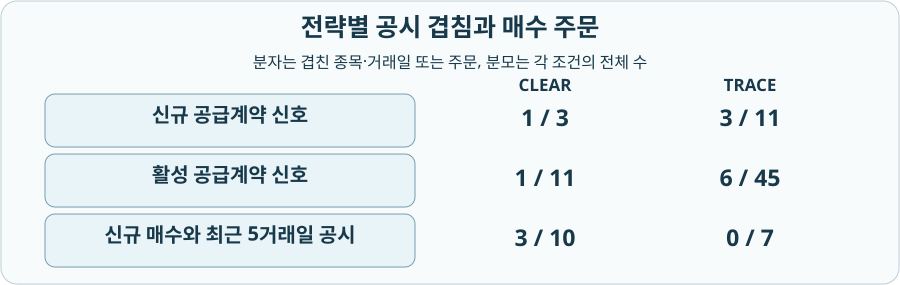

공급계약과 지배권 공시의 시점별 겹침
초록. 공급계약 공시와 지분·지배권 공시를 함께 사용할 때 어떤 주문을 검토할 수 있는지 살폈다. 기존 CLEAR·TRACE 평가 표본인 7종목·39거래일을 고정하고, 공급계약 신호 원장과 RDF에 적재한 지분·지배권 공시를 기업과 날짜로 대조하였다. 최근 5거래일에 관련 공시가 있었던 매수는 CLEAR에서 3건이었고 TRACE에서는 관찰되지 않았다. CLEAR의 세 매수와 겹친 자료는 분기보고서와 임원·주요주주 보고였으며, 최대주주 변경을 입증하는 연결은 확인되지 않았다. 이 결과는 통합 그래프의 주문 개입 대상을 정하기 위한 사전 분석이다.
1. 서론
공급계약 공시는 기업 간 거래 관계를 보여주고, 지분·지배권 공시는 누가 기업의 지분을 보유하거나 이전했는지 보여준다. 두 정보가 같은 기업에서 가까운 시기에 공개되면 매매 판단에 함께 사용할 후보가 된다. 제목으로만 찾은 분기보고서나 임원 보유 보고를 실제 지배권 변경으로 해석할 경우, 같은 기업에 공시가 있었다는 이유만으로 매수를 보류할 수 있다.
본 연구는 첫째, 두 공시군과 기존 공급계약 신호를 주문 가능한 시점에 맞춰 대조한다. 둘째, 같은 기업을 가리키는 LPG와 RDF의 경로를 원문까지 확인한다. 셋째, 제목으로 얻은 후보 가운데 사건·정정 근거가 주문 판단에 쓰일 수 있는 범위를 밝힌다.
2. 관련 연구
공급계약 공시의 시장 반응 연구는 공시 당일과 다음 날의 반응이 달라질 수 있음을 보고하였다 [1]. 기업 간 경제적 연결의 연구는 거래 상대의 정보가 다른 기업에 전달되는 경로를 검토하였다 [2]. TRACE는 과거 금융 그래프에서 학습한 관계 규칙으로 탐색 범위를 제한하고 원문 근거를 확인하는 방법을 제안하였다 [3]. 본 연구는 공급계약 자료로 산출한 기존 신호를 고정한 상태에서 지분·지배권 공시가 어떤 시점에 겹치는지 측정한다.
3. 방법론
3.1 분석 단위와 공개 시점
기본 단위는 종목·거래일이며, 매수 겹침의 단위는 전략·종목·시가 매수 주문이다. 지분·지배권 후보는 최대주주 변경, 주식양수도, 대량보유, 임원·주요주주 소유 보고와 정기보고서의 다섯 공시군이다. 접수일을 확인한 공시는 다음 거래일 시가부터 조회할 수 있다고 가정하였다.
3.2 두 그래프의 연결
공급계약 그래프의 종목 코드를 기업에 대응시키고, 동일 OpenDART 기업 코드로 지분·지배권 RDF의 공시를 조회하였다. 각 그래프에서는 별도의 접수번호를 통해 자기 공시의 근거를 찾는다. 그림 1에서 공급계약 공시와 분기보고서는 서로 다른 두 문서이며, 공통으로 가리키는 대상은 SK하이닉스다.

3.3 CLEAR·TRACE 신호
CLEAR의 기존 유효 계약·구매자 확인과 TRACE의 자동 규칙 채굴·경로 탐색 결과를 기존 원장에서 읽었다. 신규 신호는 해당 거래일에 채택된 공시가 있는 경우이고, 활성 신호는 기존 5거래일 신호 합계가 0과 다른 경우다. 각 신호일에 새 지배권 후보가 반영 가능한지 집계하였다. 매수의 경우 해당일을 포함해 평가 구간 안의 최근 5거래일에 반영 가능해진 후보가 있었는지 조회하였다. 평가 구간 초반에는 이 검색 창이 짧다. 기존 신호 생성 방법
3.4 지배권 판정과 주문 규칙
예를 들어 기존 CLEAR가 오늘 SK하이닉스를 사라고 판단했다고 가정하자. 같은 회사의 분기보고서가 오늘부터 읽을 수 있게 되면, 제목 기준에서는 지분 관련 정보를 담을 수 있는 보고서가 나왔으므로 매수를 하루 미루는 후보가 된다. 그래프 기준에서는 한 단계 더 확인한다. 이 보고서가 결산일에 누가 주식을 갖고 있었는지 보여주는 자료라면 보유 관측으로 기록한다. 최대주주가 바뀌었다는 근거까지 확인되어야 변경 사건으로 처리한다.
후속 실험에서는 확인된 적격 사건이 있는 경우에만 매수를 한 거래일 보류하고, 다음 날 기존 신호로 다시 판단한다. 같은 거래를 원공시와 정정본이 보고하면 한 사건으로 묶고, 주문 시점까지 접수된 정정만 반영한다. 판정할 근거가 부족하면 보류 상태로 기록한다. 이번 분석은 기존 주문과 공시가 겹친 범위를 세었으며, 새 주문이나 손익을 계산하는 실험은 수행하지 않았다.
3.5 OWL 상위 유형과 검증
OWL의 역할은 공시에 명시된 합병과 같은 세부 유형에서 기업구조재편 같은 상위 유형을 찾는 것이다. 정정 적용과 완료 여부는 접수 시점과 원문 주장으로 확인한다. 본 분석에서는 RDF의 시간·출처 연결을 이용했으며, 겹친 공시에서 지배권 변경을 확인한 뒤 OWL 상위 유형이 주문 판정을 바꾸는 사례는 관찰하지 못했다.
4. 실험
4.1 데이터셋
기존 공통 후보 7종목의 2026년 10월 1일~11월 26일 39거래일을 사용하였다. 표본은 삼성전자, SK하이닉스, 삼성중공업, HD현대중공업, 현대건설, 삼성물산, 삼성전기이며 전체 273개 종목·거래일이다. CLEAR와 TRACE의 일별 판단·공시 채택·체결 원장, 공개 LPG의 기업 식별자, EC2 RDF 스냅샷의 공시 메타데이터를 연결하였다.
4.2 겹침 결과
평가 구간에 접수되어 마지막 거래일 이내 반영 가능했던 지분·지배권 후보는 63건이었다. 임원·주요주주 보고 52건, 대량보유 4건, 정기보고서 7건이다. 최대주주 변경과 주식양수도 유형은 관찰되지 않았다. 다수 공시가 같은 종목·거래일에 몰릴 수 있으므로 아래 표는 공시 수 대신 종목·거래일 또는 주문으로 집계하였다.

| 종목 | 지분 공시 | CLEAR 신규 | TRACE 신규 | CLEAR 활성 | TRACE 활성 | CLEAR 매수 | TRACE 매수 |
|---|---|---|---|---|---|---|---|
| 삼성전자 | 29 | 0/1 | — | 0/2 | — | 1/2 | 0/1 |
| SK하이닉스 | 3 | 1/1 | — | 1/5 | — | 1/3 | 0/2 |
| 삼성중공업 | 3 | — | 1/2 | — | 1/10 | — | — |
| HD현대중공업 | 14 | — | 1/4 | — | 1/14 | 0/1 | 0/1 |
| 현대건설 | 11 | — | 1/2 | — | 4/6 | 0/1 | 0/1 |
| 삼성물산 | 2 | 0/1 | — | 0/4 | — | 1/2 | 0/1 |
| 삼성전기 | 1 | — | 0/3 | — | 0/15 | 0/1 | 0/1 |
4.3 매수 주문과 원문 근거
경로가 겹친 접수번호 13건은 EC2에서 S3 원문 XML의 SHA-256과 추출 결과를 다시 대조하였다. 12건에서 해당 파서의 지분 관측 항목과 위치를 재현하였다. 삼성중공업 분기보고서는 원문 해시를 확인했으나 해당 추출기가 보유 표의 근거 행을 반환하지 않았다. 다음 표에는 기존 CLEAR 매수와 겹친 공시를 제시하였다.
| 기존 CLEAR 주문 | 공시 원문 | 확인한 근거 |
|---|---|---|
| 삼성전자 · 11월 25일 시가 178,500원 매수 | 11월 18일 임원·주요주주 보고 | 보고자 역할 189·191행, 변경 전 보유 수량 280행. |
| SK하이닉스 · 11월 17일 시가 1,098,000원 매수 | 11월 16일 분기보고서 | 최대주주·특수관계인 보유현황 50100행부터. |
| 삼성물산 · 11월 23일 시가 244,500원 매수 | 11월 16일 분기보고서 · 11월 19일 임원·주요주주 보고 | 보유현황 77011행부터. 임원·주요주주 보고의 역할 183·185행, 변경 전 보유 수량 277행. |
4.4 결과 해석과 본실험 설계
CLEAR의 매수 10건 중 3건에 지분 보고가 겹쳤다. 이 세 주문의 후보는 보유 관측이며, 연결된 최대주주 변경 거래는 확인되지 않았다. TRACE의 활성 신호에 겹친 날은 여섯 날이었으나 매수 보류의 대상이 되는 주문은 없었다. 따라서 이날의 주가 성과를 지배권 사건 확인의 효과로 해석할 근거는 없다.
독립 기간의 후속 비교에서는 CLEAR와 TRACE 각각에 ① 기존 전략, ② 같은 기업의 지배권 후보 제목을 확인한 전략, ③ 사건·정정·원문 근거와 적격 상위 유형을 확인한 전략을 적용한다. 세 조건은 동일한 가격, 체결 비용, 기존 신호를 사용한다. ②와 ③ 사이에서 바뀐 매수 건수와 순수익률·최대낙폭·보유 비중을 비교하며, 실제 사건이 포함된 표본을 먼저 확보한다.
5. 한계와 결론
기존 하락장 표본을 재사용했으므로 결과는 이 7종목과 기간의 겹침 빈도를 보여준다. 수집 시각은 일 단위이며, 5거래일 검색 창은 평가 시작일에서 잘린다. 같은 기업 코드에 연결되었다는 것은 주문 시점의 공시 후보라는 뜻이다. 보고 양식의 변경, 표 추출 실패, 기업 식별 오류와 공개 시각 오차에 따라 판정이 달라질 수 있다.
이 표본에서는 지분 관련 제목이 공급계약 신호와 겹치는 경우를 확인했으나, 겹친 매수에서 지배권 변경 근거를 확인하지 못했다. 후속 실험에서는 실제 변경·정정 사례가 포함된 독립 기간을 확보한 뒤 판단 규칙을 사전에 고정해 평가한다.
부록 · 재현
아래 명령은 기존 세 원장과 공개 배포본의 LPG 노드 CSV 및 명시 RDF로 집계를 재현한다. EC2에서 공개 파일로 다시 실행하여 후보 공시와 겹침 행·집계가 모두 일치함을 확인하였다. EC2에서 원문을 다시 검증하려면 동일한 추출 JSONL과 S3 버킷을 각각 --ownership, --bucket으로 지정한다. 이 모드에서는 원문 해시를 대조한 뒤 기존 추출기로 필드를 다시 읽는다.
PYTHONPATH=src python3 scripts/audit_governance_signal_overlap.py \
site/journal/2026-11-27-trace-backtest \
lpg-nodes.csv.gz rdf-asserted.nt.gz overlap.json참고문헌
- 우민철, 박수철. (2017). 중요 공시에 대한 시장반응－단일판매 공급계약 공시를 대상으로－. 경영연구, 32(1), 205–229. DOI
- Cohen, L., & Frazzini, A. (2008). Economic links and predictable returns. The Journal of Finance, 63(4), 1977–2011. DOI
- Ding, Q., Shi, H., Castejón Lozano, L., Conner, M., Abia, J., Gallego-Ledesma, L., Fellowes, J., Conangla Planes, G., Elwood, A., & Liu, B. (2026). TRACE: Temporal rule-anchored chain-of-evidence on knowledge graphs for interpretable stock movement prediction. arXiv, 2603.12500v1. 프리프린트